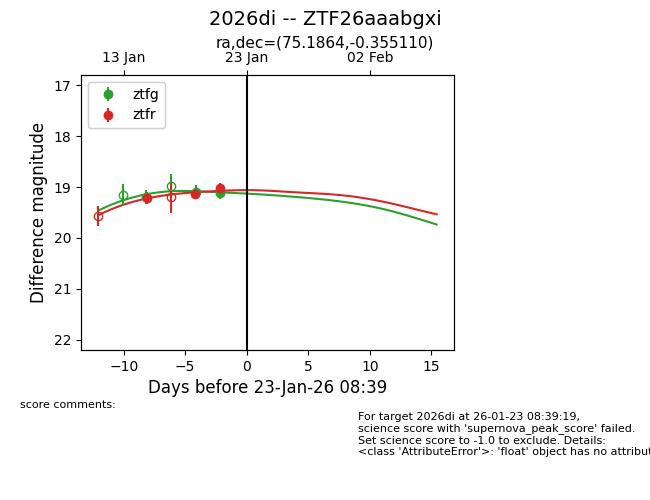
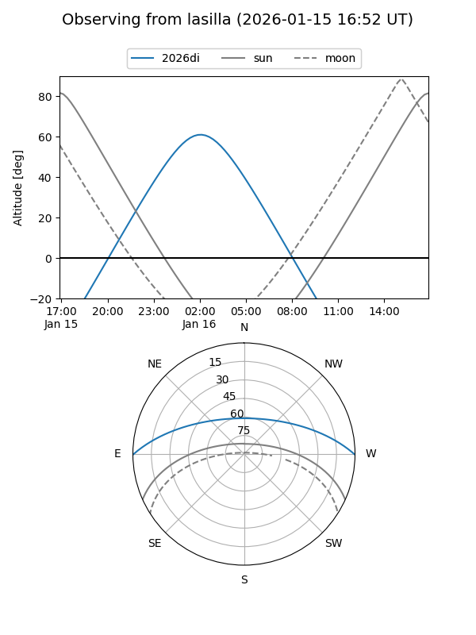
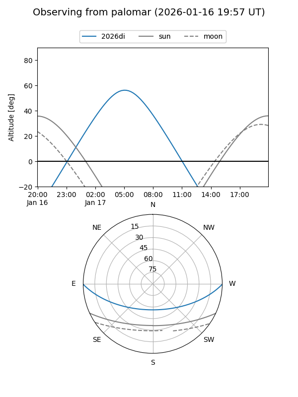
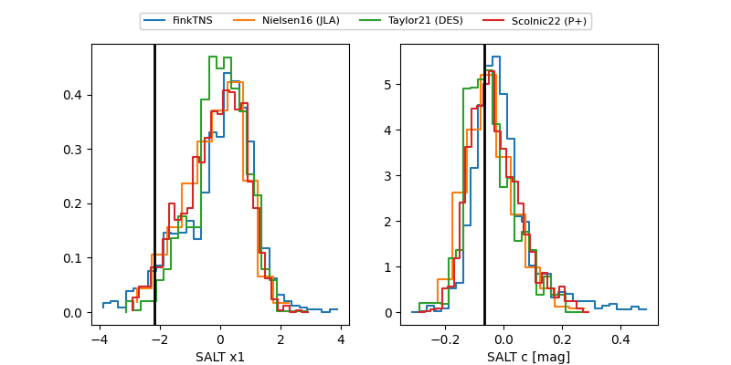

2026di
Target 2026di at 2026-01-15 09:30
Aliases and brokers:
FINK: link
Lasair: link
ALeRCE: link
TNS: link
YSE: link
alt names
ZTF26aaabgxi (ztf,fink_ztf)
2026di (tns,yse)
Coordinates:
equatorial (ra, dec) = 75.1864,-0.35511
equatorial (HMS+DMS) = 05:00:44.74,-00:21:18.39
galactic (l, b) = (199.8217,-24.59184)
Flags:
Photometry:
last ztfg=19.19, ztfr=19.22
1 ztfg, 1 ztfr detections
Lightcurve

Visibility


Additional plots
